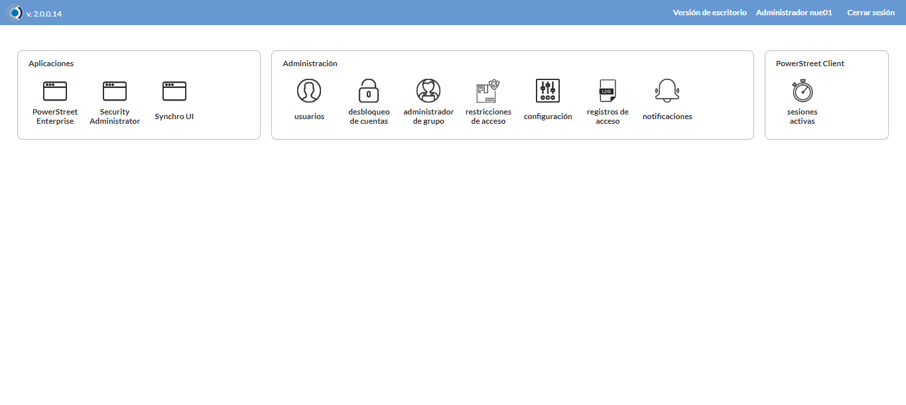
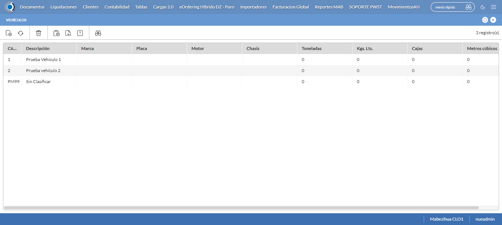
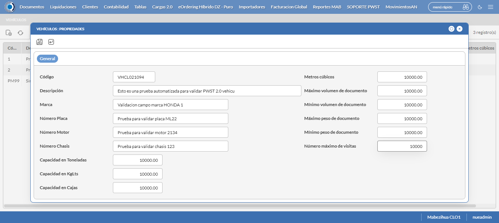
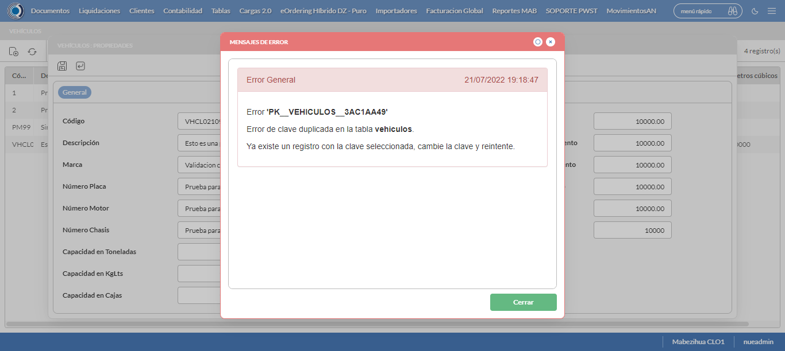
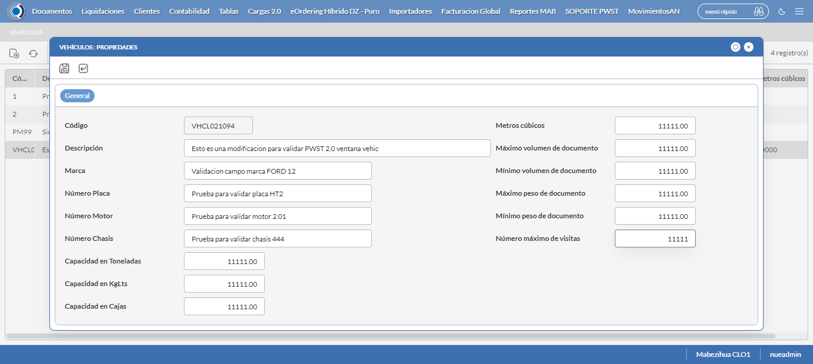
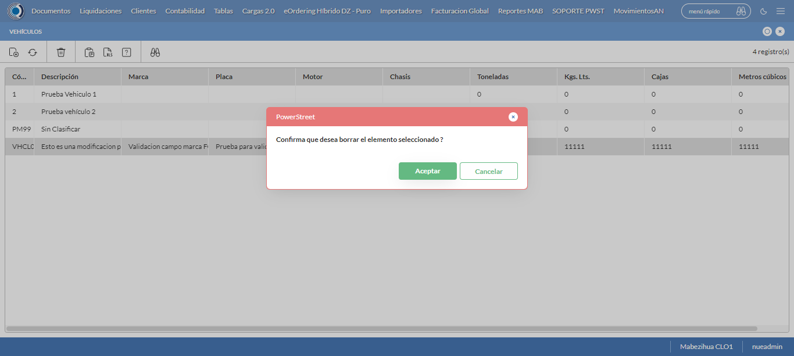

Desarrollado por : Area de Testing PWST
Fecha y hora de inicio : 2022-07-21 17:15:57
Duracion : 0:04:48.953274
Resultado : Total 8，Correctos 8 ，Taza de resultado 100.00%
Resumen 100.00% Errores 0 Fallidos 0 Correctos 8 Test realizados 8
| Caso de Prueba | Total | Correctos | Fallido | Error | Detalles | Captura del error |
| Vehiculos.Test: Escenario 1 de Vehiculos | 8 | 8 | 0 | 0 | Detalles | |
test |
pt1_1: 2022-07-21 17:15:58,389 - root - INFO - Se abre el chrome
2022-07-21 17:16:03,320 - root - INFO - Entra a la URL
2022-07-21 17:16:03,452 - root - INFO - Maximiza la pantalla
2022-07-21 17:16:06,506 - root - INFO - Cambia al frame
|
|
||||
test_000: Ingresa a la base de datos |
pt1_2: 2022-07-21 17:16:09,600 - root - INFO - Escribe el usuario
2022-07-21 17:16:09,710 - root - INFO - Escribe la contraseña
2022-07-21 17:16:09,844 - root - INFO - Se dio clic en el boton ingresar
2022-07-21 17:16:14,637 - root - INFO - Ejecutar Enterprise
2022-07-21 17:16:14,638 - root - INFO - Captura: C:\xampp\htdocs\versiones\automatizaciones\AutoPWST\01V\report\img screen：20220721_17_16_14.png
2022-07-21 17:16:18,865 - root - INFO - Cambia entre pestañas
|
 | ||||
test_001: Abre menu y ejecuta pantalla |
pt1_3: 2022-07-21 17:16:45,107 - root - INFO - Abre el menu completo
2022-07-21 17:16:55,771 - root - INFO - Abre la pantalla de Vehiculos
2022-07-21 17:16:55,867 - root - INFO - La pantalla ejecutada es Vehiculos.
2022-07-21 17:16:55,868 - root - INFO - Captura: C:\xampp\htdocs\versiones\automatizaciones\AutoPWST\01V\report\img screen：20220721_17_16_55.png
2022-07-21 17:16:56,056 - root - INFO - Se presiona el boton 'Nuevo', para crear un nuevo registro.
|
 | ||||
test_002: Abre la ventana de nuevo y crear un registro |
pt1_4: 2022-07-21 17:16:57,234 - root - INFO - Se abrio la pantalla para el ingreso de un registro nuevo.
2022-07-21 17:16:57,348 - root - INFO - El campo 'Codigo' si se encuentra visible.
2022-07-21 17:16:57,394 - root - INFO - El campo 'Descrición' si se encuentra visible.
2022-07-21 17:16:57,436 - root - INFO - El campo 'Marca' si se encuentra visible.
2022-07-21 17:16:57,478 - root - INFO - El campo 'Número Placa' si se encuentra visible.
2022-07-21 17:16:57,519 - root - INFO - El campo 'Número Motor' si se encuentra visible.
2022-07-21 17:16:57,573 - root - INFO - El campo 'Número Chasis' si se encuentra visible.
2022-07-21 17:16:57,613 - root - INFO - El campo 'Capacidad en Toneladas' si se encuentra visible.
2022-07-21 17:16:57,650 - root - INFO - El campo 'Capacidad en KgLts' si se encuentra visible.
2022-07-21 17:16:57,703 - root - INFO - El campo 'Capacidad en Cajas' si se encuentra visible.
2022-07-21 17:16:57,739 - root - INFO - El campo 'Metros cúbicos' si se encuentra visible.
2022-07-21 17:16:57,778 - root - INFO - El campo 'Máximo volumen de documento' si se encuentra visible.
2022-07-21 17:16:57,816 - root - INFO - El campo 'Mínimo volumen de documento' si se encuentra visible.
2022-07-21 17:16:57,855 - root - INFO - El campo 'Máximo peso de documento' si se encuentra visible.
2022-07-21 17:16:57,892 - root - INFO - El campo 'Mínimo peso de documento' si se encuentra visible.
2022-07-21 17:16:57,935 - root - INFO - El campo 'Número máximo de visitas' si se encuentra visible.
2022-07-21 17:16:58,032 - root - INFO - Ingresa el codigo del nuevo registro
2022-07-21 17:17:01,387 - root - INFO - Ingresa la descripción del nuevo registro
2022-07-21 17:17:04,589 - root - INFO - Ingresa la marca del nuevo registro
2022-07-21 17:17:07,761 - root - INFO - Ingresa el numero de placa del nuevo registro
2022-07-21 17:17:11,032 - root - INFO - Ingresa el numero del motor del nuevo registro
2022-07-21 17:17:14,306 - root - INFO - Ingresa el numero del chasis del nuevo registro
2022-07-21 17:17:17,481 - root - INFO - Ingresa la capacidad en toneladas del nuevo registro
2022-07-21 17:17:20,655 - root - INFO - Ingresa la capacidad en kg/lts del nuevo registro
2022-07-21 17:17:23,875 - root - INFO - Ingresa la capacidad en cajas del nuevo registro
2022-07-21 17:17:27,058 - root - INFO - Ingresa los Metros Cubicos del nuevo registro
2022-07-21 17:17:30,239 - root - INFO - Ingresa el Máximo volumen de documento del nuevo registro
2022-07-21 17:17:33,417 - root - INFO - Ingresa el Mínimo volumen de documento del nuevo registro
2022-07-21 17:17:36,572 - root - INFO - Ingresa el Máximo peso de documento del nuevo registro
2022-07-21 17:17:39,766 - root - INFO - Ingresa el Minimo peso de documento del nuevo registro
2022-07-21 17:17:42,942 - root - INFO - Ingresa el Número máximo de visitas del nuevo registro
2022-07-21 17:17:45,958 - root - INFO - Captura: C:\xampp\htdocs\versiones\automatizaciones\AutoPWST\01V\report\img screen：20220721_17_17_45.png
2022-07-21 17:17:49,344 - root - INFO - Se da clic en el boton Guardar; se debe crear un nuevo registro.
|
 | ||||
test_003: Repetir el registro creado anteriormente |
pt1_5: 2022-07-21 17:17:52,509 - root - INFO - Se presiona el boton 'Refrescar', para crear un nuevo registro igual al anterior.
2022-07-21 17:17:55,693 - root - INFO - Se presiona el boton 'Nuevo', para crear un nuevo registro igual al anterior.
2022-07-21 17:17:56,794 - root - INFO - Se abrio la pantalla para el ingreso de un registro nuevo.
2022-07-21 17:17:56,832 - root - INFO - El campo 'Codigo' si se encuentra visible.
2022-07-21 17:17:56,871 - root - INFO - El campo 'Descrición' si se encuentra visible.
2022-07-21 17:17:56,910 - root - INFO - El campo 'Marca' si se encuentra visible.
2022-07-21 17:17:56,962 - root - INFO - El campo 'Número Placa' si se encuentra visible.
2022-07-21 17:17:57,000 - root - INFO - El campo 'Número Motor' si se encuentra visible.
2022-07-21 17:17:57,039 - root - INFO - El campo 'Número Chasis' si se encuentra visible.
2022-07-21 17:17:57,077 - root - INFO - El campo 'Capacidad en Toneladas' si se encuentra visible.
2022-07-21 17:17:57,117 - root - INFO - El campo 'Capacidad en KgLts' si se encuentra visible.
2022-07-21 17:17:57,156 - root - INFO - El campo 'Capacidad en Cajas' si se encuentra visible.
2022-07-21 17:17:57,194 - root - INFO - El campo 'Metros cúbicos' si se encuentra visible.
2022-07-21 17:17:57,234 - root - INFO - El campo 'Máximo volumen de documento' si se encuentra visible.
2022-07-21 17:17:57,273 - root - INFO - El campo 'Mínimo volumen de documento' si se encuentra visible.
2022-07-21 17:17:57,327 - root - INFO - El campo 'Máximo peso de documento' si se encuentra visible.
2022-07-21 17:17:57,366 - root - INFO - El campo 'Mínimo peso de documento' si se encuentra visible.
2022-07-21 17:17:57,405 - root - INFO - El campo 'Número máximo de visitas' si se encuentra visible.
2022-07-21 17:17:57,498 - root - INFO - Ingresa el codigo del nuevo registro
2022-07-21 17:18:00,800 - root - INFO - Ingresa la descripción del nuevo registro
2022-07-21 17:18:04,022 - root - INFO - Ingresa la marca del nuevo registro
2022-07-21 17:18:07,227 - root - INFO - Ingresa el numero de placa del nuevo registro
2022-07-21 17:18:10,452 - root - INFO - Ingresa el numero del motor del nuevo registro
2022-07-21 17:18:13,675 - root - INFO - Ingresa el numero del chasis del nuevo registro
2022-07-21 17:18:16,829 - root - INFO - Ingresa la capacidad en toneladas del nuevo registro
2022-07-21 17:18:19,986 - root - INFO - Ingresa la capacidad en kg/lts del nuevo registro
2022-07-21 17:18:23,177 - root - INFO - Ingresa la capacidad en cajas del nuevo registro
2022-07-21 17:18:26,356 - root - INFO - Ingresa los Metros Cubicos del nuevo registro
2022-07-21 17:18:29,499 - root - INFO - Ingresa el Máximo volumen de documento del nuevo registro
2022-07-21 17:18:32,691 - root - INFO - Ingresa el Mínimo volumen de documento del nuevo registro
2022-07-21 17:18:35,862 - root - INFO - Ingresa el Máximo peso de documento del nuevo registro
2022-07-21 17:18:39,006 - root - INFO - Ingresa el Minimo peso de documento del nuevo registro
2022-07-21 17:18:42,149 - root - INFO - Ingresa el Número máximo de visitas del nuevo registro
2022-07-21 17:18:48,421 - root - INFO - Se da clic en el boton Guardar; NO se debe crear un nuevo registro.
2022-07-21 17:18:51,425 - root - INFO - Captura: C:\xampp\htdocs\versiones\automatizaciones\AutoPWST\01V\report\img screen：20220721_17_18_51.png
2022-07-21 17:18:51,655 - root - INFO - Se presiona el boton 'Cerrar', para cerrar el mensaje de duplicidad de llave primaria
2022-07-21 17:18:53,787 - root - INFO - Se presiona el boton 'Cerrar', para cerrar la ventana
|
 | ||||
test_004: Modificar el registro |
pt1_6: 2022-07-21 17:18:57,973 - root - INFO - Se presiona el boton 'Refrescar', para crear un nuevo registro igual al anterior.
2022-07-21 17:19:09,642 - root - INFO - Se da clic en el registro creado, para proceder a modificarlo.
2022-07-21 17:19:09,938 - root - INFO - Ingresa la descripción del nuevo registro
2022-07-21 17:19:13,169 - root - INFO - Ingresa la marca del nuevo registro
2022-07-21 17:19:16,452 - root - INFO - Ingresa el numero de placa del nuevo registro
2022-07-21 17:19:19,667 - root - INFO - Ingresa el numero del motor del nuevo registro
2022-07-21 17:19:22,926 - root - INFO - Ingresa el numero del chasis del nuevo registro
2022-07-21 17:19:26,171 - root - INFO - Ingresa la capacidad en toneladas del nuevo registro
2022-07-21 17:19:29,384 - root - INFO - Ingresa la capacidad en kg/lts del nuevo registro
2022-07-21 17:19:32,630 - root - INFO - Ingresa la capacidad en cajas del nuevo registro
2022-07-21 17:19:35,807 - root - INFO - Ingresa los Metros Cubicos del nuevo registro
2022-07-21 17:19:38,996 - root - INFO - Ingresa el Máximo volumen de documento del nuevo registro
2022-07-21 17:19:42,271 - root - INFO - Ingresa el Mínimo volumen de documento del nuevo registro
2022-07-21 17:19:45,468 - root - INFO - Ingresa el Máximo peso de documento del nuevo registro
2022-07-21 17:19:48,719 - root - INFO - Ingresa el Minimo peso de documento del nuevo registro
2022-07-21 17:19:51,934 - root - INFO - Ingresa el Número máximo de visitas del nuevo registro
2022-07-21 17:19:54,941 - root - INFO - Captura: C:\xampp\htdocs\versiones\automatizaciones\AutoPWST\01V\report\img screen：20220721_17_19_54.png
2022-07-21 17:19:58,223 - root - INFO - Se da clic en el boton Guardar; se debe modificar la informacion del registro.
|
 | ||||
test_005: Eliminar el registro creado |
pt1_7: 2022-07-21 17:20:01,348 - root - INFO - Se presiona el boton 'Refrescar', para proceder a eliminar el registro.
2022-07-21 17:20:16,993 - root - INFO - Se da clic en el registro creado, para proceder a eliminarlo.
2022-07-21 17:20:25,137 - root - INFO - Se presiona el boton 'Eliminar', para eliminar el registro.
2022-07-21 17:20:25,139 - root - INFO - Captura: C:\xampp\htdocs\versiones\automatizaciones\AutoPWST\01V\report\img screen：20220721_17_20_25.png
2022-07-21 17:20:25,364 - root - INFO - Se confirma el eliminado del registro
2022-07-21 17:20:33,506 - root - INFO - Se presiona el boton 'Refrescar', para crear un nuevo registro igual al anterior.
2022-07-21 17:20:41,653 - root - INFO - Se presiona el boton 'Cerrar', para cerrar la pantalla de Categorias Fiscales.
|
 | ||||
test_006: Cerrar_Navegador |
pt1_8: 2022-07-21 17:20:45,971 - root - INFO - Se cierra chrome
|
|
||||
| Caso de prueba | 8 | 8 | 0 | 0 | Taza de resultado：100.00% | |